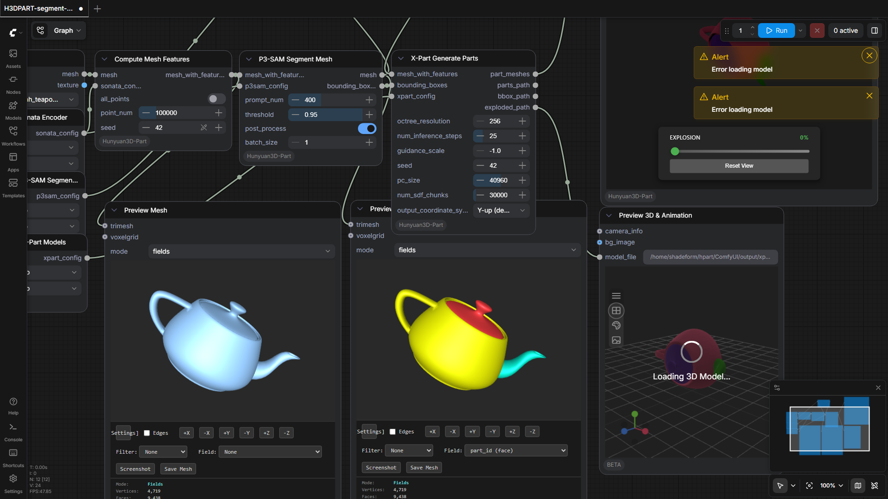

PozzettiAndrea/ComfyUI-Hunyuan3D-Part
Test Results
2026-05-11 13:59 UTC
Windows-11-10.0.26200-SP0
Intel64 Family 6 Model 79 Stepping 1, GenuineIntel
100.0%
1 passed
1/1 tests
Workflows
Grid
List

H3DPART-segment-partgen
pass
298.95s
Downloaded Models
16 files · 9.3 GB
models/hunyuan3d-part/
8.8 GB
model.safetensors
6.2 GB
conditioner.safetensors
1.6 GB
shapevae.safetensors
625.2 MB
p3sam.safetensors
430.1 MB
models/sonata/
413.9 MB
sonata.pth
413.9 MB
.cache\huggingface\CACHEDIR.TAG
195.0 B
.cache\huggingface\download\sonata.pth.metadata
128.0 B
.cache\huggingface\.gitignore
1.0 B
models/vae_approx/
18.7 MB
taef1_encoder.safetensors
2.4 MB
taesd3_encoder.safetensors
2.4 MB
taef1_decoder.safetensors
2.4 MB
taesd3_decoder.safetensors
2.4 MB
taesdxl_decoder.safetensors
2.3 MB
taesd_decoder.safetensors
2.3 MB
taesdxl_encoder.safetensors
2.3 MB
taesd_encoder.safetensors
2.3 MB
×
‹
›
0.0s / 0.0s
Resource Usage
RAM (GB)
VRAM (GB)